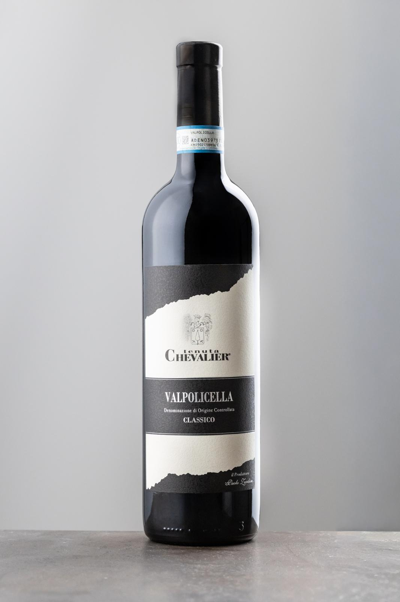
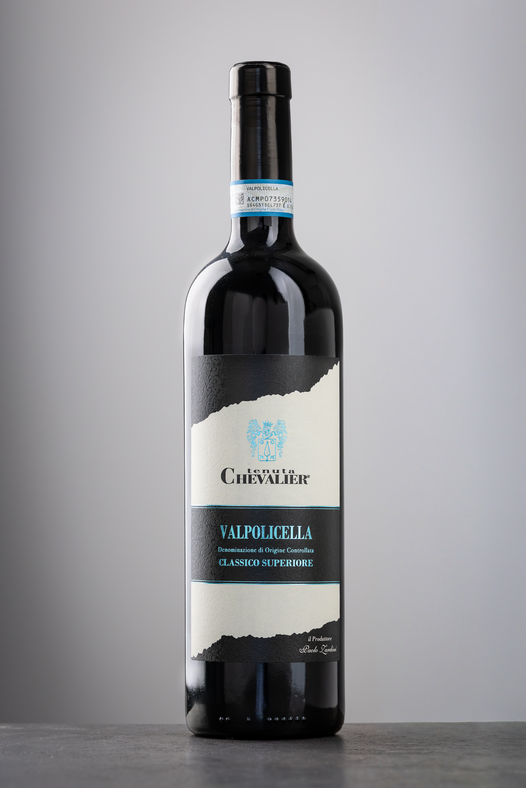
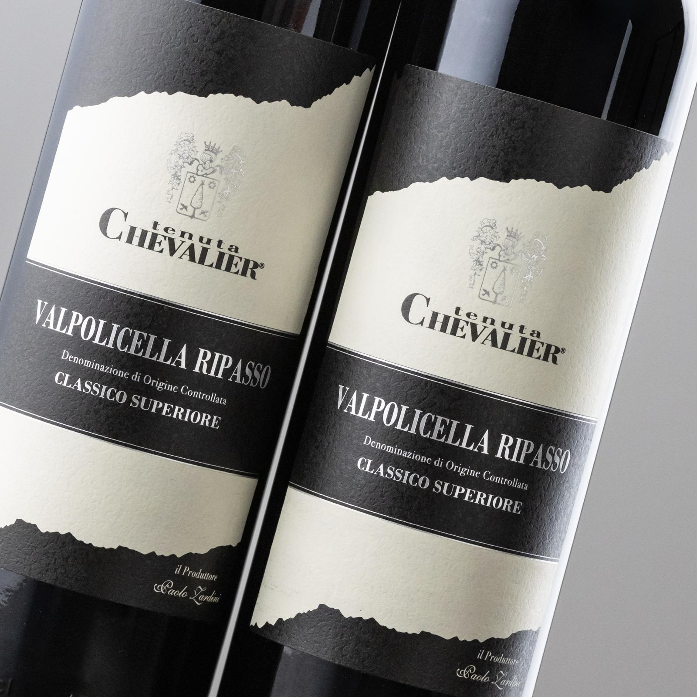

Valpolicella Classico DOC
Rosso fresco e fragrante, con un profilo asciutto e piacevole. Da vendemmia tardiva, esprime equilibrio tra corpo leggero, acidità viva e note fruttate.

Valpolicella Classico Superiore DOC
Da uve selezionate, è un rosso dal profilo rubino e dal profumo delicatamente speziato. Al palato è armonico e vellutato, con equilibrio tra freschezza, frutto e tannino.

Valpolicella Ripasso Classico Superiore DOC
Rosso vellutato e armonico, con profumi fruttati e una freschezza sostenuta. Al sorso è pieno ed equilibrato, con tannini eleganti e lunga persistenza.

Amarone della Valpolicella Classico DOCG
Rosso intenso e avvolgente, dal profilo ricco e persistente. Note di frutta matura e spezie si incontrano con una struttura elegante e un finale di grande carattere.

Rocchetto IGT Corvina in Purezza 100%
Corvina in purezza dal gusto pieno e speziato, con un’espressione intensa e luminosa. Al palato è caldo, deciso e ben bilanciato, con una vena fruttata che accompagna la beva.

Recioto della Valpolicella Classico DOC
Dolcezza armonica e grande profondità: un vino ricco e vellutato, con profumi di frutta e un equilibrio elegante. Perfetto per chi cerca un finale morbido, persistente e pieno di sfumature.
Pensiero IGT Passito Bianco
Bianco da uve appassite, espressivo e luminoso, con sensazioni aromatiche dolci e floreali. Al palato è morbido e avvolgente, con una piacevole freschezza e lunga persistenza.